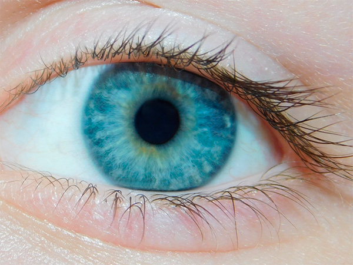
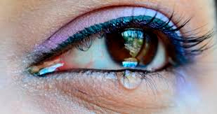
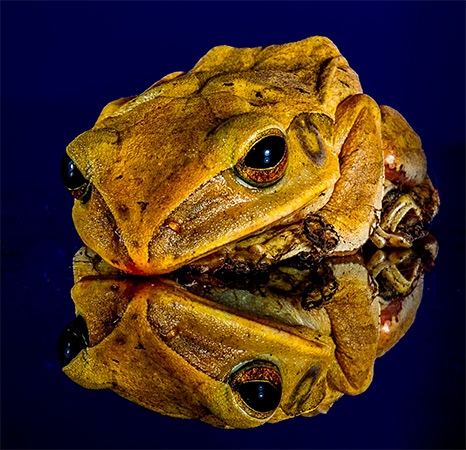
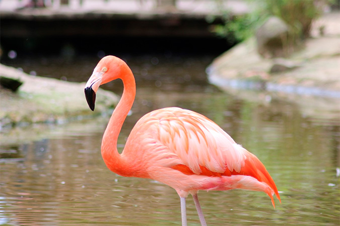
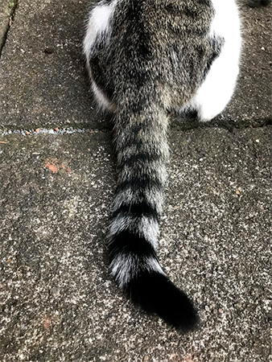

Rafael Rodrigues
10 de Abril de 2022
1. Todas as pessoas que têm olhos azuis têm um mesmo ancestral em comum
2. Respirar pela boca o tempo todo pode causar cáries e modificar o formato da mandíbula
3. A composição química das lágrimas é diferente dependendo de seu motivo. Por exemplo, se são emocionais ou causadas por uma irritação ou bocejo a composição varia
4. A língua das girafas pode chegar a medir 50 cm. Sobretudo, elas também as usam para limpar suas orelhas
5. A pele de uma rã dourada venenosa possui toxinas suficientes para matar 10 homens adultos
6. A cor rosada dos flamingos, afinal, é devido à sua alimentação. Isso porque, na verdade, eles são brancos
7. O coração humano bate 100.000 vezes por dia
8. 10% dos ossos de um gato estão presentes em sua cauda
9. Beijar um bebê na orelha pode deixá-lo surdo
10. Os bebês elefantes usam suas próprias trombas como ‘chupeta’ para se acalmarem